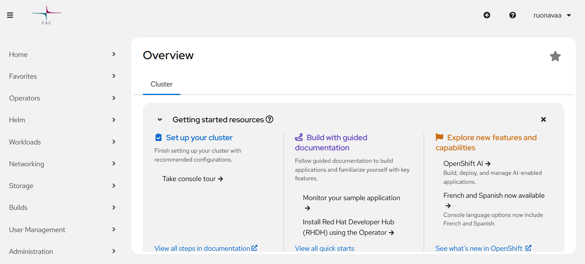
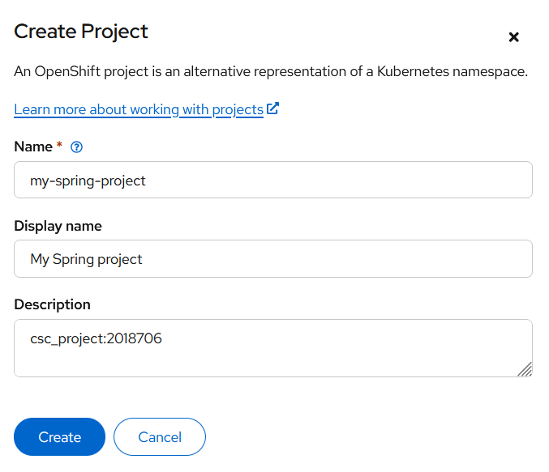
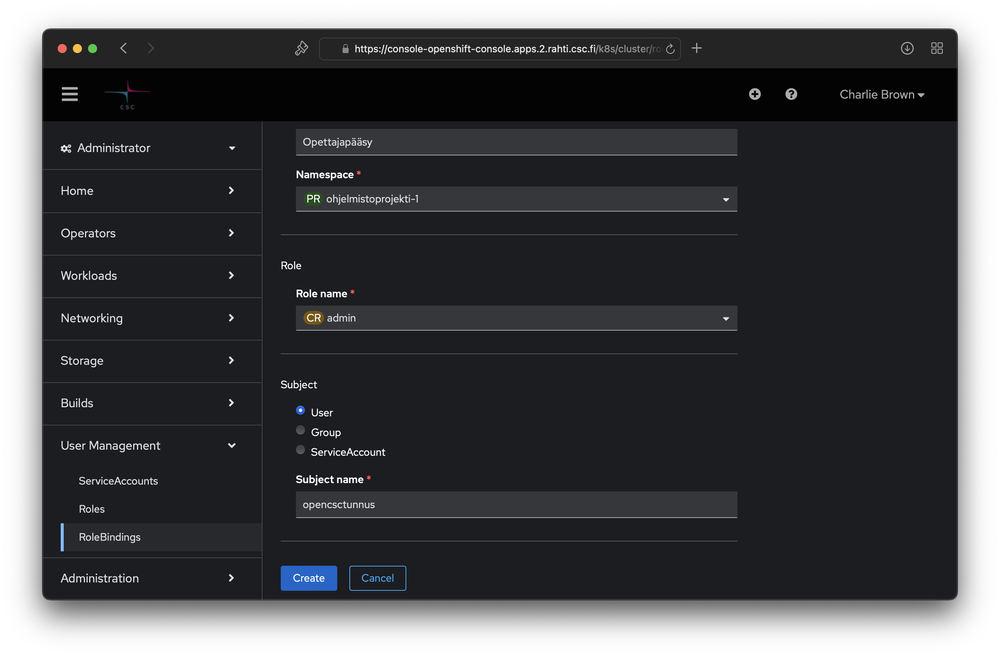

Rahti-projektin luonti
Jotta Rahti-palvelua voi käyttää, pitää sen olla otettuna käyttöön MyCSC projektissa ja itse Rahti-palveluun pitää olla määriteltynä Rahti-projekti.
Avaa Rahti-palvelun web-käyttöliittymä osoitteessa https://rahti.csc.fi, valitse Rahti-2 ja kirjaudu palveluun CSC-tunnuksellasi. Kirjautumisen jälkeen palvelun etusivu näyttää tältä:

Lisää itsellesi Rahti-projekti painamalla aloitussivun ’Create a new project’ linkkiä. Anna projektille kuvaava nimi.

MyCSC:n projektinäkymässä näkyvä projektinumero tulee mainita Rahti-projektin kuvauskentässä projektia luotaessa. Tällä mekanismilla palvelun käytöstä syntyneet kulut kohdennetaan määriteltyyn MyCSC projektiin.
Kirjaa projektinumero projektin kommenttikenttään seuraavasti:
csc_project:<projektinumero>
Kun painat Create, luodaan Rahti-projekti, johon voidaan määritellä tarvittavia palveluja ja resursseja.
Jäsenten lisääminen Rahti-projektiin
Rahti-projektit ovat sidottuja MyCSC projekteihin ja oletuksena näkyvät vain MyCSC projektin jäsenille. Projektiin voidaan lisätä muita käyttäjiä heidän CSC-tunnuksillaan Administrator/User Management/RoleBindings-asetuksen kautta.

Voit Rahti-projektin omistajana näin lisätä kurssin opettajan omaan projektiisi.
Projektin luominen komentorivikomennoin
Voit luoda Rahti-projektin myös komentoriviltä oc-komennoin. Seuraavissa esimerkeissä luotavan projektin nimi on myproj.
oc new-project myproj --description='csc_project:200xxxx'
xxxxkorvataan oman CSC-projektin tunnisteen neljällä viimeisellä numerolla